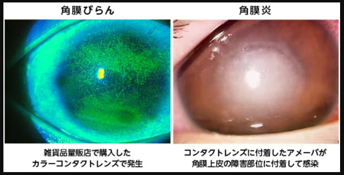

問題 1
コンタクトレンズがメガネと比べて持つ大きなリスク（欠点）は何ですか？
角膜に直接接触するため傷をつける可能性がある
像が拡大・縮小して見える
プリズム作用によるゆがみが生じる
スポーツ時にケガのリスクが高まる
解説：コンタクトレンズは角膜に直接接着して視力を矯正するため、角膜に傷をつける可能性があることが大きなリスクです。像の拡大・縮小やプリズム作用によるゆがみ、ケガのリスクはむしろメガネの欠点であり、CLはこれらがないことが利点です。

コンタクトレンズによる角膜びらん（左）と角膜炎（右）
患者様への説明ポイント：雑貨品量販店で購入したカラーコンタクトや、不適切な使用方法は重大な角膜障害を引き起こす可能性があります。
問題 2
コンタクトレンズ装用によるドライアイ対策として適切「でない」ものはどれですか？
装用時間をできるだけ長くする
乾きにくい材質のレンズに変更する
ワンデータイプのレンズに変更する
ドライアイ用の目薬をさす
解説：ドライアイ対策としては、乾きにくい材質やワンデータイプへの変更、ドライアイ用目薬の使用が有効です。コンタクトレンズ装用は涙の量を減らしたり蒸発を促進したりするため、装用時間は「できるだけ短時間にする」のが正しい対策です。
患者様への説明ポイント：「乾くけど長時間つけたい」という患者様には、装用時間を短くすることの重要性を説明し、メガネとの併用を勧めましょう。
問題 3
ソフトコンタクトレンズの上から目薬をさす場合、避けるべき防腐剤はどれですか？
塩化ベンザルコニウム（BAK）
ホウ酸
塩化ナトリウム
ヒアルロン酸
解説：塩化ベンザルコニウム（BAK）はコンタクトレンズに吸着して角膜に悪影響を与える可能性があります。CL上から目薬をさす場合は、防腐剤が入っていない使い切りタイプか、BAK以外の防腐剤が入っている目薬を使用します。
患者様への説明ポイント：市販の目薬を使いたいという患者様には、「ソフトコンタクトレンズを使用したまま点眼しないこと」の注意書きがないか確認するよう伝えましょう。
問題 4
花粉症によるアレルギー性結膜炎がある時期のコンタクトレンズ装用について、正しいものはどれですか？
基本的にCL装用は中止し、メガネに替える
抗アレルギー点眼薬をCLの上からさせば問題ない
ハードコンタクトレンズなら装用を続けてよい
1日使い捨てなら症状があっても装用を続けてよい
解説：コンタクトレンズは目に直接接触するため、レンズの摩擦や異物感がアレルギー反応を刺激し、症状を悪化させます。また、レンズにアレルゲンが吸着して症状が長期化する可能性もあるため、アレルギー性結膜炎の間は装用を中止すべきです。
 巨大乳頭結膜炎：上がCL装用による症状、下が点眼治療1ヶ月後の改善
巨大乳頭結膜炎：上がCL装用による症状、下が点眼治療1ヶ月後の改善
患者様への説明ポイント：コンタクトレンズの長期装用によるアレルギー反応で巨大乳頭結膜炎が起きることがあります。かゆみ、レンズのずれ、曇りやすさを感じたら早めに受診するよう伝えましょう。
問題 5
花粉症の治療で注目されている「プロアクティブ点眼療法」とはどのような治療法ですか？
花粉飛散前から抗アレルギー点眼薬を開始する
症状が出てから強い点眼薬を使用する
コンタクトレンズの上から点眼する方法
内服薬のみで治療する方法
解説：プロアクティブ点眼療法は、花粉が飛散する前から抗アレルギー点眼薬を開始して、花粉飛散時期の目の症状をできるだけ抑える治療法です。症状を最小限にして、早くCL装用を再開できるようにすることが目的です。
患者様への説明ポイント：毎年花粉症で困っている患者様には、花粉シーズン前に受診して早めに点眼を開始することを勧めましょう。
問題 6
コンタクトレンズ装用中に目が痛くなった場合、最初にすべきことは何ですか？
すぐにコンタクトレンズを外す
目薬をさして様子を見る
レンズを水道水で洗って再装用する
痛みが治まるまで目を閉じて待つ
解説：コンタクトレンズ装用中に充血、眼痛、流涙、眼脂などの症状が出た場合は、まずすぐにレンズを外すことが重要です。異物混入、レンズ破損、感染症など様々な原因が考えられ、装用を続けると悪化する可能性があります。
問題 7
重症の角膜感染症の原因となる微生物として、資料に挙げられているものはどれですか？
アカントアメーバと緑膿菌
大腸菌とブドウ球菌
インフルエンザウイルスとアデノウイルス
カンジダとアスペルギルス
解説：重症の角膜感染症の原因として、アカントアメーバと緑膿菌が挙げられています。どちらも水道水などを介してレンズケース内で増殖し、目に入って感染症を起こします。急激な目の痛みと視力低下を自覚し、治療も長期になることが多いです。
問題 8
コンタクトレンズによる角膜感染症の主な感染経路として正しいものはどれですか？
汚染された手指と保存ケース内の汚染
空気中の飛沫感染
プールや温泉からの直接感染
他人のコンタクトレンズの貸し借り
解説：角膜感染症の大きなリスクとして、1）汚染された手指を介して微生物が目に入る場合、2）保存ケース内が微生物に汚染されてレンズに付着した微生物が目に入る場合、の2つが挙げられています。
患者様への説明ポイント：「ちゃんとケアしている」と言う患者様でも、手洗いの方法やケースの交換頻度を具体的に確認することが大切です。
問題 9
ソフトコンタクトレンズのレンズケースの交換目安として推奨されている期間はどれですか？
解説：角膜感染症ではレンズケースの汚染が大きな問題となっています。ソフトコンタクトレンズの場合、レンズケースは3か月を目途に新しいものと交換することが推奨されています。
問題 10
患者様から「コンタクトレンズはお化粧の前と後、どちらにつければいいですか？」と質問された場合、正しい回答はどれですか？
お化粧の前につける
お化粧の後につける
どちらでも問題ない
お化粧をする日はCL装用を避ける
解説：お化粧後の手や指は汚れているため、先にコンタクトレンズをつけてからお化粧をするのが正しい順序です。化粧品がコンタクトレンズの汚れの原因になることがあります。ただし、マスカラやアイラインを塗るときはレンズに触れないよう注意が必要です。
患者様への説明ポイント：女性の患者様には、「CL→メイク」の順番と、外すときは「CL外す→メイク落とす」の順番もあわせて説明すると親切です。